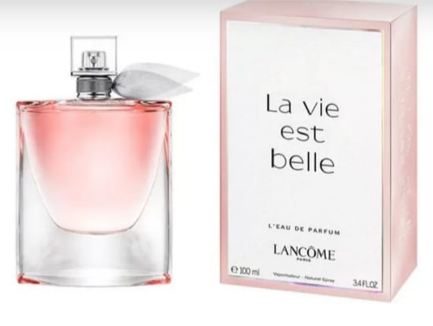

Perfume Lancôme La Vie est Belle Feminino L'Eau de Parfum - R$ 579,90
10 X de R$ 29,99 sem juros
Descrição: Com a tradução de “a vida é bela”, o LA VIE EST BELLE da marca francesa Lancôme é encantador. A sensação ao usar este perfume é de estar em um ambiente tranquilo e charmoso em que a vida é mais doce e feliz.
Um ode à feminilidade, o aroma inspira liberdade para que cada mulher siga o suas aspirações e encontre seu próprio caminho. O PERFUME LANCÔME revolucionou o mercado perfumista como o primeiro íris gourmand, uma fragrância que conquista cada vez mais pessoas em vários países.
La Vie est Belle: um perfume de qualidade exclusiva
O LA VIE EST BELLE LANCÔME é assinado pelos famosos perfumistas Olivier Polge, Dominique Ropion e Anne Flipo. Composto por 63 ingredientes com cerca de metade de origem natural, tem um toque clássico com o patchouli em sua fórmula e é também moderno com a presença da íris gourmand.
Com um frasco delicado e elegante, essa essência exclusiva possui ótima apresentação. Acompanhada por um charmoso laço na tampa, a embalagem é sofisticada. Na Renner, você encontra o perfume La vie est Belle em versões de 30 ml, 50 ml, 75 ml e 100 ml.
Conheça a formulação do La Vie est Belle
Uma fragrância oriental gourmand recomendada para quem gosta de um patchouli frutado e equilibrado em acidez e refrescância. É um aroma marcante, doce e fresco que acompanha eventos ao ar livre ou noturnos. Para uso em ambientes fechados durante o dia, use com moderação.
Muitos dos ingredientes mais raros e nobres do mundo estão na fórmula do LANCÔME LA VIE EST BELLE, por isso, é um perfume com o qual você não passa despercebida. Entre as notas de topo, destacam-se a cassis, groselha preta e pêra.
.